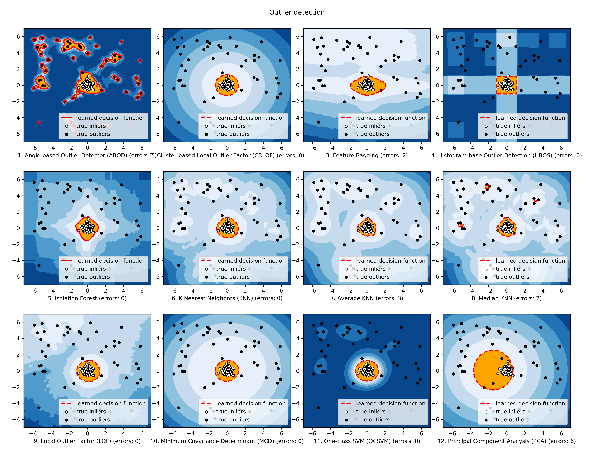

Important Functionalities
PyOD toolkit consists of three major groups of functionalities: (i) outlier
detection algorithms; (ii) outlier ensemble frameworks and (iii) outlier
detection utility functions.
Individual Detection Algorithms:
- Linear Models for Outlier Detection:
- Proximity-Based Outlier Detection Models:
- Probabilistic Models for Outlier Detection:
- Outlier Ensembles and Combination Frameworks
Outlier Detector/Scores Combination Frameworks:
Utility Functions for Outlier Detection, see pyod.utils.
Comparison of all implemented models are made available below
(Code, Jupyter Notebooks):
For Jupyter Notebooks, please navigate to “/notebooks/Compare All Models.ipynb”

Key APIs & Attributes
The following APIs are applicable for all detector models for easy use.
Key Attributes of a fitted model:
pyod.models.base.BaseDetector.decision_scores_: The outlier scores of the training data. The higher, the more abnormal.
Outliers tend to have higher scores.pyod.models.base.BaseDetector.labels_: The binary labels of the training data. 0 stands for inliers and 1 for outliers/anomalies.
Quick Links
References
| [AAS15] | (1, 2, 3, 4, 5) Charu C Aggarwal and Saket Sathe. Theoretical foundations and algorithms for outlier ensembles. ACM SIGKDD Explorations Newsletter, 17(1):24–47, 2015. |
| [AAP02] | Fabrizio Angiulli and Clara Pizzuti. Fast outlier detection in high dimensional spaces. In European Conference on Principles of Data Mining and Knowledge Discovery, 15–27. Springer, 2002. |
| [ABKNS00] | Markus M Breunig, Hans-Peter Kriegel, Raymond T Ng, and Jörg Sander. Lof: identifying density-based local outliers. In ACM sigmod record, volume 29, 93–104. ACM, 2000. |
| [AGD12] | Markus Goldstein and Andreas Dengel. Histogram-based outlier score (hbos): a fast unsupervised anomaly detection algorithm. KI-2012: Poster and Demo Track, pages 59–63, 2012. |
| [AHR04] | Johanna Hardin and David M Rocke. Outlier detection in the multiple cluster setting using the minimum covariance determinant estimator. Computational Statistics & Data Analysis, 44(4):625–638, 2004. |
| [AHXD03] | Zengyou He, Xiaofei Xu, and Shengchun Deng. Discovering cluster-based local outliers. Pattern Recognition Letters, 24(9-10):1641–1650, 2003. |
| [ALK05] | (1, 2) Aleksandar Lazarevic and Vipin Kumar. Feature bagging for outlier detection. In Proceedings of the eleventh ACM SIGKDD international conference on Knowledge discovery in data mining, 157–166. ACM, 2005. |
| [ALTZ08] | Fei Tony Liu, Kai Ming Ting, and Zhi-Hua Zhou. Isolation forest. In Data Mining, 2008. ICDM‘08. Eighth IEEE International Conference on, 413–422. IEEE, 2008. |
| [ALTZ12] | Fei Tony Liu, Kai Ming Ting, and Zhi-Hua Zhou. Isolation-based anomaly detection. ACM Transactions on Knowledge Discovery from Data (TKDD), 6(1):3, 2012. |
| [AMP03] | Junshui Ma and Simon Perkins. Time-series novelty detection using one-class support vector machines. In Neural Networks, 2003. Proceedings of the International Joint Conference on, volume 3, 1741–1745. IEEE, 2003. |
| [ARRS00] | Sridhar Ramaswamy, Rajeev Rastogi, and Kyuseok Shim. Efficient algorithms for mining outliers from large data sets. In ACM Sigmod Record, volume 29, 427–438. ACM, 2000. |
| [ARD99] | Peter J Rousseeuw and Katrien Van Driessen. A fast algorithm for the minimum covariance determinant estimator. Technometrics, 41(3):212–223, 1999. |
| [ASCSC03] | Mei-Ling Shyu, Shu-Ching Chen, Kanoksri Sarinnapakorn, and LiWu Chang. A novel anomaly detection scheme based on principal component classifier. Technical Report, MIAMI UNIV CORAL GABLES FL DEPT OF ELECTRICAL AND COMPUTER ENGINEERING, 2003. |
| [AZH18a] | Yue Zhao and Maciej K Hryniewicki. Xgbod: improving supervised outlier detection with unsupervised representation learning. In Neural Networks, 2018. Proceedings of the International Joint Conference on. IEEE, 2018. |
| [AZH18b] | Yue Zhao and Maciej K. Hryniewicki. Dcso: dynamic combination of detector scores for outlier ensembles. In ACM SIGKDD Workshop on Outlier Detection De-constructed (ODD v5.0). ACM, 2018. |